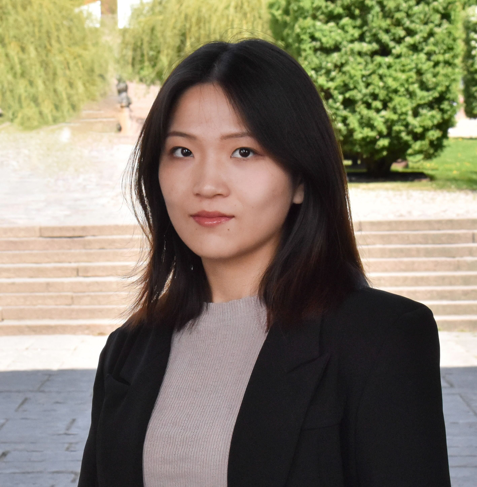
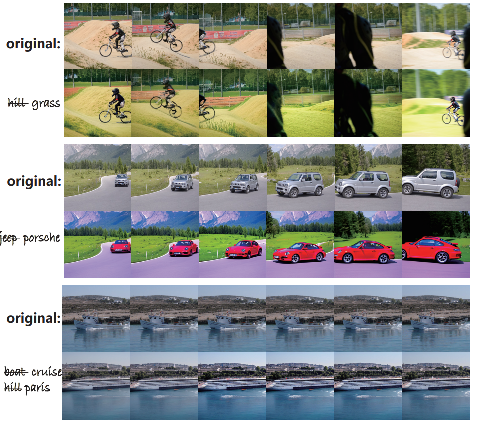
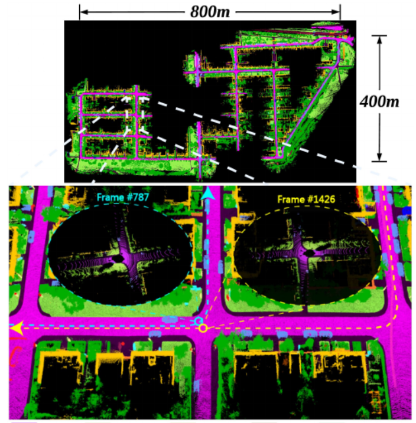

Ruiyu Wang
Second-year PhD Student
Division of Robotics, Perception, and Learning
KTH Royal Institute of Technology
Email: ruiyuw at kth dot se
Google Scholar / Linkedin / Contact
I'm a PhD student at KTH in Sweden, advised by Florian Pokorny. My research broadly covers robotic manipulation and computer vision, and is funded by the CloudGripper project of Wallenberg AI, Autonomous Systems and Software Program.
Before joining KTH, I received my M.Sc. in quantitative finance from the National University of Singapore. In my free time, I do rock climbing.
Publications
|  |
RealCraft: Attention Control as A Tool for Zero-shot Consistent Video Editing Shutong Jin, Ruiyu Wang and Florian T.Pokorny Preprint.
|

|
Shutong Jin, Ruiyu Wang, Muhammad Zahid and Florian T.Pokorny 2024 IEEE/RSJ International Conference on Intelligent Robots and Systems (IROS).
|
|  |
A game-theoretic perspective of generalization in reinforcement learning Chang Yang*, Ruiyu Wang*, Xinrun Wang, Zhen Wang Deep Reinforcement Learning Workshop NeurIPS 2022
|
Education
|
|
PhD candidate: KTH Royal Institute of Technology (Sweden)
|
Master: Nanyang Technological University (Singapore)
|
|
|
Foundation Master: Ecole Centrale de Nantes (France)
|
 |
Bachelor: Wuhan University (China)
|
Teaching
Deep Learning in Data Science
Assistant
Foundations of Machine Learning
Assistant